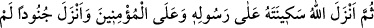
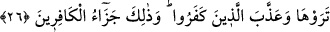

Ben Abdulmuttalib’in oğluyum.”
derken buna işaret etmişti. Peygamberimiz o rüyada peygamberliği hakkında bilgi ve
şânının yüceliğine işâret olduğu için onunla övünerek bu sözleriyle sanki “Ben, işte o
rüyanın sahibinin oğluyum.” diyordu.”
Rivayet edildiğine göre Peygamber (a.s.) savaş meydanında yalnız başına kaldığı
halde kâfirlere hamle yapıyor onlar kaçıyorlardı. Sonra onlar O’na hamle yapıyorlar
fakat o kaçmıyor ve onların karşısında duruyordu. Bu durum on küsûr defa tekrar etti.
Abbas (r.a.) der ki: “Müşriklerin üzerine sürmemesi için Hz. Peygamber’in katırını
yularından tutarak mâni oluyordum.”
Bu hâdise, Peygamberimiz’in şecâatinin ne derece yüksek olduğunu göstermek için
yeterlidir. Öyle ki bu halde dahi düşmandan ismini gizlememiş, kâfirlerden kendi canına
bir zarar gelmesinden korkmamıştı. Bu ancak onun Azîz ve Hakîm olan Allah tarafından
te’kid edildiği için olmuştu. İşte o zaman “Ey Rabbim! Bana vaadettiğin şeyi ver!” diye
duâ etti Abbas’a da: “İnsanlara yüksek sesle seslen.” diye emretti.
Abbas, gür sesli idi. Sesinin gürlüğü hakkında şöyle bir olay anlatılır: Bir gün
Mekke’ye baskın yapılmıştı. Abbas, “Vâ Sabâhâh!” diye öyle bir bağırdı ki sesini duyan
bütün hamile kadınlar çocuklarını düşürdüler. Sesi, sekiz mil mesafeden duyulurdu.
Peygamberimiz’in bu emri üzerine Abbas Ensâr’a oymak oymak seslendi. Sonra da:
“Ey Şecere ashâbı!”, “Ey Bakara sûresi ashâbı!” diye nidâ etti.
“Şecere ashâbı”, Rıdvân bey‘atında bulunan sahabilerdir. “Bakara suresi ashabı” ise,
“Rasul, Rabb’inden kendisine indirilene inandı, müminler de.” (el-Bakara, 2/285)
âyetinde bahsedilen kimselerdir. Bunlar Bakara sûresini ezberlemişlerdi. Ashab şöyle
derdi: Bakara ve Âl-i İmrân sûrelerini ezbere bilen kişi bizim gözümüzde büyürdü.
Abbas’ın bu çağrısı üzerine onlar, “Emrin başımız üstüne! Emrin başımız üstüne”
diyerek hemen tek bir cemaat halinde geri döndüler. İşte bu duruma Allah Teâlâ’nın şu
sözü işâret etmektedir:
26. Sonra Allah, Rasûlü’nün ve müminlerin üzerine sekînetini (güven veren
rahmetini) indirdi, sizin görmediğiniz askerler indirdi ve kâfirlere azâb etti (onları
bozguna uğrattı). İşte kâfirlerin cezası budur!
“Sonra Allah, Rasûlü’nün ve müminlerin” hem hezimete uğrayıp dağılan hem de
diğerlerinin “üzerine sekînetini” yani kendisi ile kalplerin sükûnete ve tam bir